📑 Dans cette page (11 sections)
🧰 Checklist avant ouverture publique
📌 Important
Fais cette checklist avant d'annoncer le site publiquement.
- [ ]
FLASK_SECRET_KEYdéfinie, longue et stable - [ ]
.envabsent du dépôt ; dépôt privé - [ ]
DATABASE_URLpointe vers Supabase (Session pooler) - [ ] Médias sur R2/S3 (ou disque persistant)
- [ ]
SITE_URL,DISCORD_REDIRECT_URIet Redirect Discord alignés sur le domaine final - [ ]
ADMIN_DISCORD_IDSlimité aux éditeurs de confiance - [ ] Articles de démonstration supprimés
- [ ] Mentions légales rédigées si nécessaire
- [ ] Sauvegarde de la base testée
♻️ Mettre à jour le code
git pull # si tu travailles à plusieurs
# modifications…
git add . ; git commit -m "..." ; git push # Render redéploie
Teste d'abord en local (python app.py).
♻️ Mettre à jour les dépendances
pip list --outdated
pip install -U <paquet>
python app.py # tester l'accueil, un article, la connexion, un envoi de média
Reporte les versions dans requirements.txt (les bornes <major protègent des changements cassants). Mets aussi à jour PYTHON_VERSION de temps en temps.
💾 Sauvegardes
| Quoi | Comment |
|---|---|
| Textes | pg_dump régulier (page 6) ; vérifie les sauvegardes incluses dans ton offre Supabase |
| Médias | Export du bucket R2/S3 (outil rclone ou aws s3 sync) |
| Code | GitHub |
| Secrets | Gestionnaire de mots de passe |
Teste une restauration au moins une fois.
👀 Surveiller
- Logs Render pour les erreurs.
- Un moniteur externe (UptimeRobot, etc.) sur
/healthzte prévient d'une panne. Pinguer un service gratuit peut le garder éveillé, mais vérifie les règles et quotas de l'offre. - Pense à vérifier que ton projet Supabase gratuit n'est pas en pause.
🧬 Faire évoluer la base
Il n'y a pas d'outil de migration : create_all crée les tables absentes mais ne modifie pas les tables existantes.
Pour ajouter une colonne, exécute le SQL à la main (Supabase → SQL Editor), par exemple :
ALTER TABLE posts ADD COLUMN views integer NOT NULL DEFAULT 0;
puis ajoute la colonne dans app.py (Table("posts", …)). Pour des évolutions fréquentes, adopte Alembic.
🔄 Rotation des secrets
- Discord : Reset Secret → mettre à jour
DISCORD_CLIENT_SECRET. - Supabase : changer le mot de passe → mettre à jour
DATABASE_URL. FLASK_SECRET_KEY: tout changement déconnecte les éditeurs (sans autre conséquence).- R2 : créer un nouveau jeton, remplacer les clés, révoquer l'ancien.
🌐 Changer de domaine
Voir Render → domaine : DNS, SITE_URL, DISCORD_REDIRECT_URI, Redirect Discord. Si tu utilises R2 avec un domaine, vérifie aussi S3_PUBLIC_URL.
📈 Monter en charge
%%{init: {"theme":"base","themeVariables":{"primaryColor":"#0f2130","primaryTextColor":"#e6eef5","primaryBorderColor":"#5fd0ff","lineColor":"#3d89ab","secondaryColor":"#1a0d14","tertiaryColor":"#0b1824","edgeLabelBackground":"#0f2130","fontFamily":"ui-monospace, Menlo, Consolas, monospace","noteBkgColor":"#1a0d14","noteTextColor":"#ffb4bb","actorBkg":"#0f2130","actorBorder":"#5fd0ff","actorTextColor":"#e6eef5","signalColor":"#3d89ab","signalTextColor":"#3d89ab","labelBoxBkgColor":"#0f2130","labelTextColor":"#e6eef5","loopTextColor":"#3d89ab"}}}%%
flowchart LR
A["🆓 Gratuit<br/>Render Free + Supabase Free"] --> B["💳 Render payant<br/>plus de veille"]
B --> C["⚙️ 2 à 4 workers"]
C --> D["☁️ R2 ou S3 + Redis pour les limites"]
D --> E["🌍 CDN Cloudflare"]
class A ok
classDef cloud fill:#0f2130,stroke:#5fd0ff,color:#e6eef5
classDef ok fill:#0c241b,stroke:#5dffb0,color:#e6eef5
classDef bad fill:#241219,stroke:#ff4d5e,color:#ffb4bb
- Plan Render payant : plus de ressources, pas de mise en veille.
- Plus de workers/instances :
--workers 2-4; au-delà d'une instance, médias sur R2/S3 etRATELIMIT_STORAGE_URI(Redis). - Base : plan Supabase supérieur ; surveille les connexions (pool réglé dans
create_engine). - CDN (Cloudflare) devant le site et le bucket pour absorber le trafic et les vidéos.
- Cache des pages publiques si le trafic devient important.
💡 Idées d'évolution
Commentaires modérés, mode clair/sombre, recherche plein texte PostgreSQL, rôles d'éditeurs et journal des modifications, planification de publication, statistiques de visites, newsletter à partir du RSS.
📖 Ressources officielles
Documentation de Render, Supabase, Cloudflare R2, Discord Developers, Flask et SQLAlchemy : consulte-les pour les tarifs, limites et interfaces actuels, qui évoluent.


⛨ SCP Foundation — projet de fan non officiel · contenus SCP sous licence CC BY-SA 3.0 lorsque applicable · ⬆ retour en haut